CPU流水线
Contents
流水线
流水线
⑴ 流水线：指令从取值到真正执行的过程划分成多个小步骤，cpu真正开始执行指令序列时，一步压一步的执行，减少其等待时间。
⑵ 流水线级数越多，工作效率越高。intel处理器的流水线级数远超过嵌入式cpu的流水线级数
⑶ 流水线的效率：
⒜ 并非指令每一步的操作时间都是等长的。长节拍的步骤会导致流水线效率下降（短节拍的步骤要等待长节拍的步骤执行完毕）
⒝ 解决办法：
Ⅰ拆分长节拍
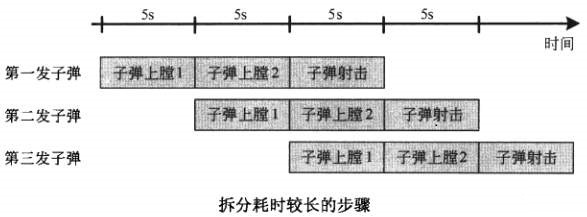
Ⅱ 增加长节拍的处理单元：使得同时间产生多个长节拍的执行结果，供短节拍的动作使用。
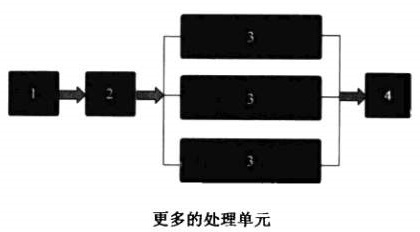
eg：长节拍是短节拍执行时间的3倍，则可以增加为3个长节拍执行单元，1个短节拍执行单元
ARM7的三级流水线：
ARM7把知道指令执行的时间分为3个步骤：取指IF，译码ID，执行EX
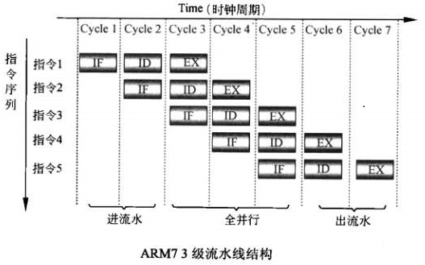
经典的MIPS5级流水线
⑴ 处理器内部有很多程序员可见的通用寄存器，这些通用寄存器组成了寄存器堆register file
⑵ 为了让不同流水线之间的数据不会互相打扰，cpu在每个阶段会把通用寄存器中的值拷贝到流水线寄存器中，使得各个节拍的工作不会乱序。
⑶ 汇编语言中，ALU执行单元直接访问通用寄存器，而在硬件实现中，通用寄存器的值先拷贝到ALU输入寄存器中(一个流水线寄存器)，然后再送回通用寄存器
⑷ MIPS在3级流水线的基础上，增加了2个阶段，1个是从内存获取数据的mem阶段，另一个是把ALU计算后的数据导出到通用寄存器堆的WB阶段
|
|
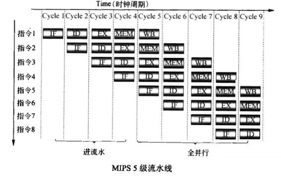
DSP对三级流水线的深层次扩展
⑴ DSP处理器把取指,译码,执行的三大步骤细分为多个小步骤
⑵ MIPS处理器把MEM和ALU计算放在不同阶段，写回通用寄存器也单独形成一个阶段。而DSP把MEM和WB阶段都放在了指令执行阶段，更符合程序员的视角。
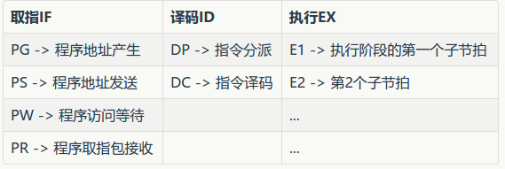
流水线思想的冒险
结构冒险：不同阶段的执行步骤由于硬件资源冲突不能同时进行
MIPS处理器的流水线中，IF阶段需要访问存储器拿指令，MEM阶段需要访问存储器拿数据，这两个动作都要访问存储器，造成存储器和寄存器之间的总线冲突，而不能同时进行。但是，现代处理器，程序被存储在L1P Cache中，数据被存在L1D Cache中，所以不会冲突。
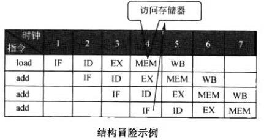
数据冒险
⑴ 流水线使得原先有先后顺序的指令同时处理，当出现某些指令组合时，可能会导致使用了错误的数据。
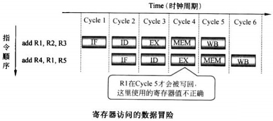
⑵ 因此，cpu采用直通(forwarding)来解决：如果当前指令的源操作数在EX/MEM的流水线寄存器中，就直接将流水线寄存器中的值传递给ALU输入，不去通用寄存器堆取值
⑶ 但不是所有数据冲突都能采用直通解决，要配置cycle等待
sub指令的R1,最早也要在cycle4中才能到MEM/EX流水线寄存器，所以仍要掩饰一个周期
控制冒险：
⑴ 当一条流水线中的指令出现跳转操作时，其他流水线提前做出的操作是根据pc+1进行取指的，跳转操作使得这些流水线上的操作全部无效
⑵ 流水线等级越深，跳转指令造成的效率下降约严重
流水线的分支预测
1-bit预测算法：
如果该指令上次发生跳转，则预测这一次也会发生跳转
2-bit预测算法：
每个指令的预测状态信息从1bit加到2bit，如果这个跳转执行了，就+1，加到3就不加了，如果跳转信息不执行就-1，减到0就不减了。如果计数器值为0/1，就预测不执行，计数器为2/3，就预测执行。
Intel的分支预测实现
⑴ 前面2个是算法思想，Intel在此基础上进行了一系列的设计。Intel分支预测包含3个单元：Branch Target Buffer（BTB），The Static Predictor，Return Stack
指令的乱序执行
乱序执行
指令在执行时，常常因为一些限制而等待。例如，MEM阶段访问的数据不在cache中，需要从外部存储器获取，这个动作需要几十个cycle，如果顺序执行，后面的指令MEM都要等待这个指令操作完成。乱序执行是说，先执行后面不依赖该数据的指令。
指令相关性
⑴ 寄存器相关：当2条指令公用寄存器时，他们就有可能相关。
⒜ 先读后读
|
|
⒝ 先写后读 (RAW:Read after Write)
|
|
⒞ 先读后写 (WAR:Write after read)
|
|
⒟ 先写后写（WAW）
|
|
【注】：WAR和WAW在2条指令间没有数据流动，被称为伪相关。
控制相关
前一条指令是跳转指令，而后一条指令的执行需要跳转指令的结果，这就是控制相关
去除指令相关
去除数据相关的动作不是由cpu进行的，而是由编译器和程序员进行处理的
|
|
去除控制相关
投机执行：cpu会根据跳转预测的结果，可能会提前把跳转后的指令放到跳转指令前面执行，是一种预测的投机行为。现代分支预测的准确性能达到98%以上，所以可以一定程度上去除控制相关
去除伪相关：WAW，WAR
⑴ 处理器的ISA寄存器数目通常较少(暴露给程序员的寄存器)，因此会导致多个变量映射到同一个寄存器中，这样即使指令逻辑上是不相关的，也会因为使用了同一个寄存器而产生相关。
⑵ 通过把相同的ISA寄存器，映射到不同的物理寄存器来解决伪相关(名字相关)
⑶ 映射策略：
⒜ 将每条指令的目的寄存器映射到新的物理寄存器
⒝ 将指令的源寄存器映射到ISA寄存器最近映射到的那个物理寄存器上
⒞ 本条指令执行后，该目的寄存器映射的更早的物理寄存器就可以释放了
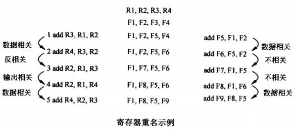
一开始R1，R2，R3，R4分别映射到F1，F2，F3，F4寄存器
第一条指令R3是目的寄存器，映射到新物理寄存器F5
这种方式会把物理寄存器用光，所以每次映射完毕都要实时释放：R4寄存器开始映射到F4寄存器，指令2结束后，R4映射到F6寄存器，此时，原先的F4寄存器就可以释放了
CPU如何进行乱序执行
Buffer
CPU内部要提供能够缓存多条指令的Buffer，才能达到乱序执行的效果
指令调度
⑴ 指令有操作数和操作码，操作码描述指令做什么(cpu分配什么样的执行单元)；而寄存器重命名后，目的寄存器总是新的，所以指令能否执行，和目的操作数已经无关，和操作码和源操作数有关
⑵ 指令可以被执行的2个条件，除了这2个条件，指令不用再等待前面的指令执行完毕
cpu中是否有空闲的执行单元执行这条指令(操作码)
该指令的源操作数是否已经准备好
指令结果顺序提交
⑴ 指令执行顺序虽然是乱序的，但是指令结果的提交顺序一定要是顺序的。因为“精确中断”的存在
⑵ 精确中断：指令执行过程中，来了一个中断，此时cpu要将ISA寄存器压栈，执行中断服务程序，然后执行中断后面的指令。而精确中断要求终端钱的指令全部执行，中断后的指令一个都不执行。而在乱序执行内核中，终端后面的指令可能放在中断前面的指令执行
⑶ 所以，cpu引入重排序缓冲区，用来缓冲指令的执行结果，这些结果会被顺序的提交到寄存器中，来实现精确中断。
处理器并行架构
Flynn分类
1966年，Flynn将处理器系统结构分成4类
⑴ SISD：处理器有一次处理一条指令，每条指令处理一份数据 （single instruction single data）
⑵ SIMD：一次处理一条数据，一条指令可以处理多分数据（数据并行）
⑶ MISD：一次处理多条指令，每条指令处理一份数据（此设计无用）
⑷ MIMD：一次处理多条指令，每条指令可以处理多分数据
指令并行
⑴ 发射单元一次发射多条指令，就能达到指令并行（multi issue）
⑵ multi-issue的2种方式
i. SuperScalar：超标量(硬件)
a. 超标量是cpu内部增加一个硬件单元，负责把穿行指令输入进行并行化处理。
b. 奔腾4采用超标量进行指令并行
ii. VLIW：超长指令字（软件）
a. 超长指令字是编译器或程序员在汇编语言中声明多条指令要在一个cycle内执行。||符号链接2条指令
b. TI C6000 DSP采用超长指令字进行指令并行
⑶ 超标量由于需要增加电路设计，增大了功耗，超标量在执行阶段制定并行。x86为了保证程序兼容性，不能不采用超标量，而后来的RISC处理器，则可以采用超长指令字VIEW结构
⑷ 并行性上来讲，VIEW更胜一筹，因为他从源头实现了指令并行，擅长于数据密集型运算。但发生cache miss，执行跳转时，VIEW无能为力，采用乱序执行+超标量处理器则能将后面的指令提前执行，因此乱序+超标量适合负责的控制类程序。
数据并行
⑴ 多媒体程序有一个特点：同一个操作应用于多个数据，于是SIMD产生出来
⑵ Intel的MMD,SSE2,SSE3,SSE4.1,SSE4.2,AVX指令集都是SIMD的。AMD的3DNOW！,SSE5指令集也是SIMD
⑶ MMX指令一次可处理64bit数据，SSX指令一次可处理128bit数据
⑷ 几种不同的SSE指令
⒜ 垂直计算
SSE指令把需要操作的2个寄存器中的数划分成对应的几个段，2个寄存器对应段中的数据进行操作
⒝ 水平计算
2个源操作数来自于同一个寄存器
⒞ 标量计算
a. 类似于垂直计算的2个寄存器分段，不同的是标量计算可以只计算2个寄存器中对应的1个段，而其他段保持不变
b. 如下，只有x0和y0进行操作，而其他段保持不练
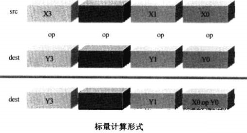
线程并行
⑴ 软件多线程：时分复用操作系统
⑵ 硬件多线程
⒜ 粗粒度硬件多线程：
当处理器发现一个线程被长时间阻塞，eg：cache miss，发射器就发射另一个线程的指令
⒝ 细粒度硬件多线程
处理器每个cycle发送不同线程的指令
⒞ 同时多线程
超标量处理器同一时间可以发送多条指令，这些指令来自于不同线程
⑶ 多核处理器架构
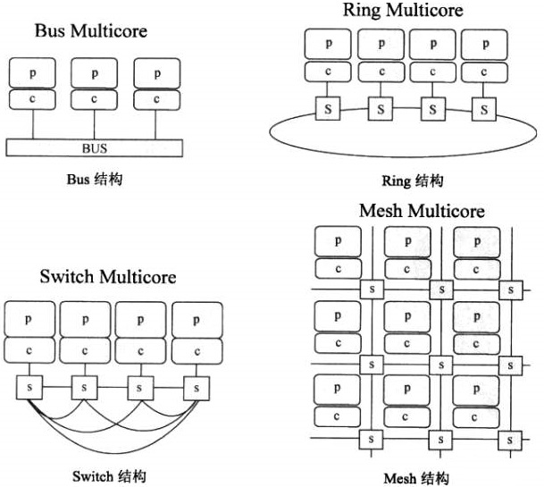
Ⅰ p:processor处理核心，c:cache缓存，s:switch用于核间通信。线条表示通信路径
Ⅱ Bus Multicore结构多核：设计简单，但任意两个核心通信都要占用总线，导致其他核心不能通信，降低效率。
Ⅲ Swich Multicore结构多核：任意两个核心间右独立的通信连线。1,2核心通信不会阻塞3,4核心通信。但这种方式消耗大量互联资源，4核心时通常使用SwitchMulticore,核心数量再多则资源浪费
Ⅳ Ring Multicore结构多核：改进了Bus结构，1和3通信要经过2，相邻的两个核心通信速度最快.通常8核心使采用这种结构
Ⅴ Mesh Multicore结构多核：类似于二维的Ring结构。核心太多时，switch结构就会导致连线过于复杂。Mesh结构利于扩展，效率高。64核心等众核可以采用这个设计。
⑷ 各种硬件多线程的对比
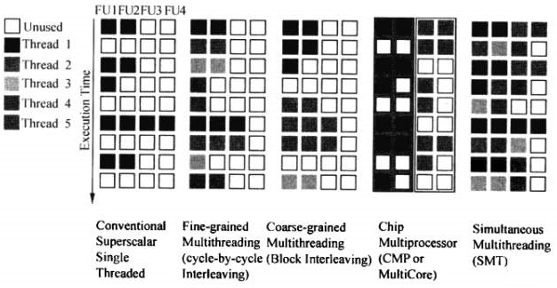
⒜ 图形解释： 每行代表一个cycle
⒝ 每列代表一个功能单元
Ⅰ 第一个是单线程处理器，大量功能单元空闲，有时if，id阶段的所有控制单元空闲
Ⅱ 细粒度多线程：每个cycle发送不同线程的指令
Ⅲ 粗粒度多线程：当cpu发现线程阻塞时(cache miss)，就发射另一个线程的指令
Ⅳ 多核心技术：每个核心2个功能单元，没有硬件多线程，2个核心分别处理2个不同的线程
Ⅴ 同时多线程：功能单元的利用率最高，超标量cpu同时发送多个线程的指令，每个线程使用不同的功能单元
Author nanshusu
LastMod 2021-08-26